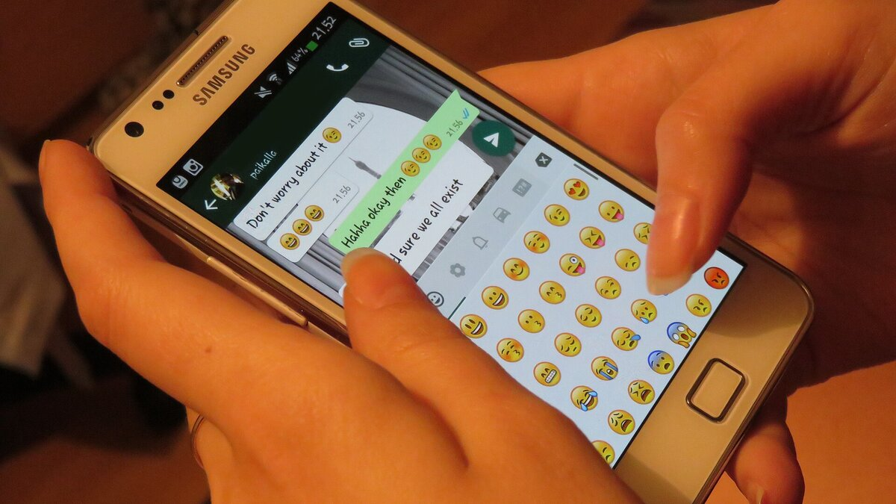

C2 · Business English
The Same News, Four Ways
One decision, four documents, four registers — and four different quantities of truth.
Play the audio and follow along, then read it again on your own. Tap or hover over a highlighted word to see what it means.
A company is closing a factory. Six hundred people will lose their jobs in November. That is the entire content of the news, and it does not change in anything that follows. What changes is the register, and with it the quantity of truth that survives the journey from the decision to the reader.
_WMID2365439.jpg){kind=link}
The press release says that the company is consolidating its manufacturing footprint to better serve evolving customer needs, and that the transition will be managed with the greatest possible care for colleagues affected. Three features of that sentence are worth noting. The agent has disappeared: nobody closes anything, a footprint is consolidated. The timeframe has gone soft, a decision with a date becoming a transition without one. And the people have been renamed twice over — first as colleagues, which implies a relationship that is in fact being terminated, and then as affected, which is the grammar of weather rather than of choice. Nothing in the sentence is false. It is simply built so that no reader can be hurt by it, which means built so that no reader can quite understand it either.
The internal email is different, because its audience will find out the truth within the hour and will not forgive being handled. It opens by saying that this is difficult news, which it is, and that the decision follows a long review, which signals that it is final and that arguing is pointless. It uses the word redundancies, because the people reading it know what is happening and a euphemism here would be an insult rather than a kindness. But it still will not say fired, and it still moves the hard clause into the passive at the only moment that matters — roles will be affected rather than we are ending your job. The email is more honest than the press release by a considerable margin, and it protects itself at exactly the same seam.
The legal notice is the most honest document of the four, and it is honest for reasons that have nothing to do with virtue. Statute requires it to state the number of positions, the categories affected, the consultation period and the dates. It therefore says six hundred, and November, and it says them in a register so flat that the number lands harder than anywhere else. Legal English is accused of obscurity, often fairly, but here the accusation is the wrong way round: the law compels precision where commercial instinct would supply fog. The cruelty of the document is entirely in the facts, because the form has no room for anything else.
The fourth version is the message one manager sends another at ten at night: they're shutting Dalton, it's six hundred, I've known for a week and I couldn't say anything. Nineteen words, every one of them plain, and all four pieces of information that matter — what, where, how many, and the fact that somebody has been sitting on it. No euphemism survives contact with a private channel at that hour. It is the only one of the four documents that admits a person decided this, that the decision was known in advance, and that the knowing was uncomfortable.


It is tempting to draw the obvious moral and say that the private message is true and the public documents are lies. That is the comfortable reading, and it is wrong, or at least too easy. The press release is not written to inform; it is written to be quoted, and a sentence that cannot be quoted against you is doing its job. The legal notice is precise because precision has been imposed on it by people who anticipated exactly this incentive. The email is a genuine attempt at decency by someone who will have to face these people in a corridor. Each document is shaped by what its writer can be held to, and the amount of truth in each is almost exactly inverse to the size of its audience.
The practical skill is not cynicism, which is cheap and tells you nothing you did not already assume. It is the ability to read a document for its constraints: who wrote this, who can hold them to it, what are they obliged to say, and what has been moved into the passive. A reader who can do that will extract more from a press release than its authors intended to put there, because the places where the agent vanishes are precisely the places where somebody made a decision they would rather not sign.
Six hundred people, in November, at Dalton. Everything else is packaging.
Key Vocabulary
- to consolidate to combine into something smaller or stronger — here, a word doing the work of “close”
- footprint the physical sites a company occupies, in business usage
- agent in grammar, the one who performs the action
- to terminate to end formally
- to handle somebody to manage a person rather than deal with them honestly
- redundancy the loss of a job because the position itself is being removed
- euphemism a mild word used in place of a blunt one
- seam the join where something is weakest and most likely to come apart
- statute a written law
- consultation period the time an employer must legally spend discussing job losses before acting
- flat without emotional color
- obscurity the quality of being hard to understand
- to compel to force
- fog deliberate vagueness
- to sit on something to know something and keep it back
- moral the lesson a story is taken to teach
- to hold somebody to something to make them answer later for what they said
- to anticipate to expect and plan for in advance
- incentive the thing that makes a person act as they do
- decency ordinary moral good behavior
- inverse moving in the opposite direction; as one grows the other shrinks
- cynicism the assumption that everybody acts from bad motives
- packaging presentation wrapped around the real content
The Same News, Four Ways — C2 · Business English · Renan the Teacher, English Language Academy · https://renangrossi.github.io/englishclasses/reading/c2/the-same-news-four-ways.html
Interactive Exercises
Practice
Complete each exercise, then click Submit to see your score and an explanation for every answer.
Speaking & Writing
Discussion
There are no right answers here — use these to practice speaking, or write a short answer to each.
- Find a real press release about job losses. Where does the agent disappear?
- Is the inverse relationship between truth and audience size inevitable, or a choice?
- The author says the legal notice is honest for reasons unrelated to virtue. What follows from that about regulation?
- Which of the four documents would you rather have written? Which would you rather receive?
- Rewrite the press-release sentence so that it is quotable and honest. Then say what it cost you.